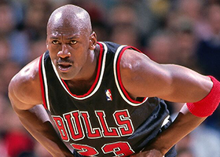

" I've failed over and over and over again again in my life. And that is why I succeed. "
~Michael Jordan~
History of Basketball
Creator
Dr. James Naismith, a Canadian physical education instructor in Springfield, Massachusetts, invented the game of Basketball in 1891.He was a 31-year old graduate student when he created the indoor sport to help athletes keep in shape during the winter. His idea was also to create a less injury-prone sport compared to football.
Early History
In the early days, a peach basket was used as a hoop and a soccer-style ball was used as a basketball. There were only 13 rules in the beginning.
Examples of some rules:
- The ball may be thrown in any direction with one or both hands
- A player cannot run with the ball, the player must throw it from the spot on which he catches it, allowance to be made for a man who catches the ball when running at good speed.
- If either side makes three consecutive fouls it shall count a goal for opponents.
- The side making the most goals in that time shall be declared the winner. In the case of a draw, the game may, by agreement of the captains, be continued until another goal is made.
Leagues/Tournaments
NBA (National Basketball Association)
The NBA is a professional basketball league in North America composed of 30 teams. It is the most significant professional basketball league in the world in terms of popularity, salaries, talent, and level of competition. Originally founded as the Basketball Association of America, it was change to its current name as we know of today after the merger with the NBL (National Basketball League), another league in America that was established in 1937. In 1976, the NBA once again had another merger with the ABA (American Basketball Association), a basketball league that operated from 1967 to 1976. Many players, coaches and executives from the NBA have been inducted into The Naismith Memorial Basketball Hall of Fame.
EuroLeague
Outside of America, the EuroLeague is the next prominent basketball league league in the world, which composes of 18 teams. It was first organized by FIBA (The International Basketball Federation) in 1958 until 2001 when the EuroLeague Basketball Company took over. Unlike the NBA where the teams are mostly from America (excluding the Toronto Raptors), the teams in EuroLeague come from different countries and cities in Europe, such as Real Madrid from Spain and Olympiacos from Greece.
NCAA Tournament
The NCAA Tournament is a single-elimination tournament played in America which composes of 68 teams of Division I College Basketball teams, used to determine the College National Champions for Division I colleges. The 32 champions of the Division I conferences are selected plus another 36 teams that are picked by their conference records. The NCAA Tournament is popular in America and the games are broadcasted on live television. The tournament also influences the NBA drafts as many players are drafted from these colleges and their perfomance in the tournament can affect draft decisions by NBA teams.
Olympics Basketball
The Olympics Basketball debuted in 1904 as a demonstration event before it became a medal sport in 1936. Held every 4 years, the international tournament is held at the Summer Olympics where players from different countries face off each other and represent their respective countries. USA Olympic Basketball team is the most dominant of all the countries as they have won 16 out of 19 of the tournament. Prior to 1992, the teams could not include NBA players as they were athletes who were paid to train full-time, so many players who were playing in the league could not participate in the tournament.
Legends & Icons
Michael Jordan
Perhaps the most known basketball athlete and the greatest basketball player of all time, Michael Jordan was an NBA player who popularized the sport in the late 1980s to the 1990s, becoming a global cultural icon. He was known for his leaping ability, which he demonstrated by performing slam dunks from the free-throw line in Slam Dunk Contest, earning him the nickname "Air Jordan". He was also able to hit clutch shots and difficult mid-range fadeaway shots. He won his first championship in 1991 with the Chicago Bulls, followed with 2 more championships in the following years to secure his first 3-peat. He retired abruptly in 1993 after his championship to play Minor League Baseball, but return to the NBA in 1995 and led the Chicago Bulls to 3 more championships consecutively to secure his second 3-peat. He retired once again after his last championship in 1998, but return once more to play for 2 more seasons in 2002 and 2003. He was also part of the USA Olympics "Dream Team" in 1992 where he led them to a gold medal, beating the other teams by at least a 44 point margin.
Greatest Career Achievements/Awards:
- 6x NBA Champion
- 6x NBA Finals MVP
- 5x Regular Season MVP
- 10x Scoring Champion
- 11x All-NBA Team Selections
- 14x NBA All-Star
LeBron James
Nicknamed "King James", LeBron is the all-time leading scorer in NBA history, surpassing Kareem's record of 38,387 points in the 2022-2023 season. He is widely regarded as one of the best players to ever step on the hardwood and is often compared to Michael Jordan in the GOAT debate. When he was in high school, he was heavily touted by the national media as a future NBA superstar for his all-around scoring, athleticism and playmaking abilities. He was expected to become a hall of famer when he was just 15 and at the same time many were also expecting him to fall short of that expectation. Drafted out of high school as the 1st overall pick by the Cleveland Cavaliers, he has since then exceeded all expectations. A few prominent events that occured in his career is "The Decision" when he announced on television his decision to leave him hometown team to join the Miami Heat and form the "Big 3" (LeBron, Dwyane Wade, Chris Bosh). He was heavily criticised for leaving the Cavaliers and forming a superteam to win a championship. However, after a 4-year stint with the Miami Heat and winning 2 championships, he returned to the Cavaliers once again in 2015 to bring a championship to his hometown team. In 2016, after being in a 3-1 deficit against the Golden State Warriors (who had just attain the best record in NBA history of 73-9 in the regular season) in the NBA Finals series, LeBron and the Cavaliers made one of the greatest comebacks in sports history, winning the series 4-3 and finally bringing a championship to his hometown team. "The Block" in the Game 7 of the Finals when he blocked Andre Iguodala's possible gane-clinching layup is also considered one of the greatest moments in the history of NBA.
Greatest Career Achievements/Awards:
- 4x NBA Champion
- 4x NBA Finals MVP
- 4x Regular Season MVP
- NBA All-Time Leading Scorer (38,652 points as of 2022-23 season)
- 19x All-NBA Team Selections
- 19x NBA All-Star
Kobe Bryant
Well-known for his "mamba mentality" and work etiquette, Kobe is the most hardworking and one of the best players to play the game of basketball. Drafted directly from high school, Kobe was not the best but he was willing to put in the work to become the player that we all know him as. His playstyle is very similar to Michael Jordan's as he Michael Jordan is his idol. Although not the greatest, he has cemented himself a place amongst the greats and has garnered the respect of many worldwide, including Michael Jordan himself. He earned the nickname "Black Mamba" from his work ethic and mentality. His time with Shaquille O'Neal on the Lakers formed one of the, if not the greatest duo in NBA history, as they 3-peatted the NBA championship from 2000 to 2002. His influence off the court has encouraged many up and coming athletes to also work harder and achieve their dreams. He has passed on back in 2020 but his legacy will continue to live on for the future generations.

Greatest Career Achievements/Awards:
- 5x NBA Champion
- 2x NBA Finals MVP
- 1x Regular Season MVP
- 4x All-Star Game MVP
- 15x All-NBA Team Selections
- 18x NBA All-Star
Stephen Curry
The greatest shooter in NBA history, Curry revolutionized the game with his 3-pointers, which inspired many teams and players to also take more 3-point shots. Before his impact in the game, shooting 3-pointers were not rarely seen, but also not often seen in the game. It revolve more around physical plays inside the 3-point line. Since then, more teams have adopted the Pace and Space style of play to shoot more 3-pointers as an attempt to defeat or copy Curry and the Golden State Warriors style of play. At the age of 33, Curry broke the record for career 3-pointers made in NBA history and after the 2022-23 season , his totals are currently at 3,390 made threes. He is also part of the "Splash Brothers" duo alongside his teammate Klay Thompson for their spectacular ability to shoot threes as both are deadly shooters on the court.
Greatest Career Achievements/Awards:
- 4x NBA Champion
- 1x NBA Finals MVP
- 2x Regular Season MVP
- NBA All-Time Career 3-pointers leader (3,390 made as of 2022-23 season)
- 9x All-NBA Team Selections
- 9x NBA All-Star
Cultural Impacts
Fashion/Apparels
The brand, "Air Jordan", is a line of basketball shoes produced by NIKE (related apparels and accessories marketed under Jordan Brand). Produced for Michael Jordan in the late 1984 when his career first started, it was released to the public in 1985 and became an instant success. The basketball shoes became a cultural impact and to this day, people are still getting their hands on the shoes and there are even collectors for the shoes. The "Jumpman" logo is a silhouette of Michael Jordan himself doing a slam dunk.
Other Sports
The game of Basketball has also led to the creation of many variations of it, some of which have also become an official sports. For example, the most popular out of all the variations that became an official sport is Netball. Netball was created in 1897, and featured some differences such as no backboards and no dribbling. It was described as "women's basketball" in the past, but evolve into its own sport and by 1960, international playing rules were standardised for the game.
Filmography
Basketball also entered the film and media industry as it got more popular, featuring variety of shows for different audiences such as "Space Jam", "White Men Can't Jump" and "He Got Game". Some films have also been inspired by real events, for example, "Coach Carter" is based on real life Richmond High School basketball coach Ken Carter, who locked out his undefeated team for not honouring academic and behavourial contracts. Aside from western films, basketball media is also popular in the east side of the world, where there are Japanese manga and anime made on the basis of basketball.
Video Games
Basketball is also part of the video game market, with one of the most notable games in the world being the NBA 2k series. The game features NBA players from past to present gamers can play as their favourite players.
Click to shoot!